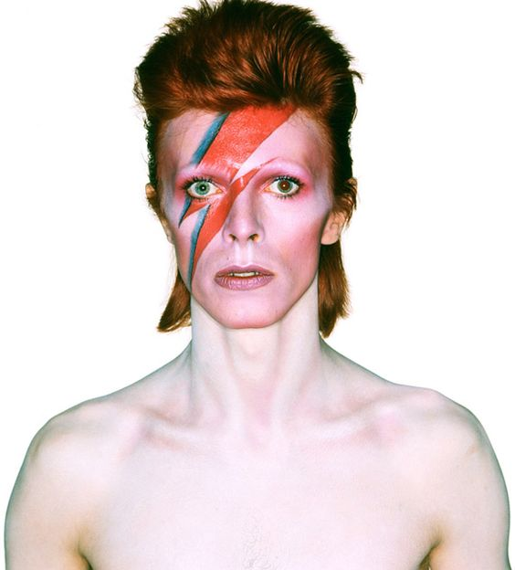

The persona, Aladdin Sane was assumed to be inspired by David Bowie's half-brother, Terry, who was diagnosed with schizophrenia. The name comes from the word play in the character’s name - 'A lad insane'. The album, which takes on the same name, was based on the dark side of American culture that Bowie had experienced.
David Bowie quote goes here in a box